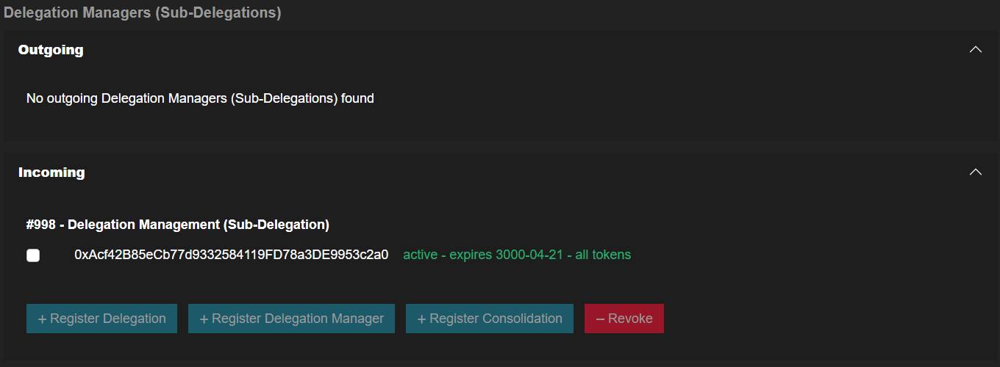

How to View Your Delegation Managers (Sub-Delegations)?
- Go to the Delegation Center Section and click the 'View/Manage' button for (e.g., 'Any Collection' for all collections or a specific collection such as 'The Memes Collection').

- At the Delegation Managers (Sub-Delegations) Area you will be able to view your outgoing and incoming sub-delegations.
